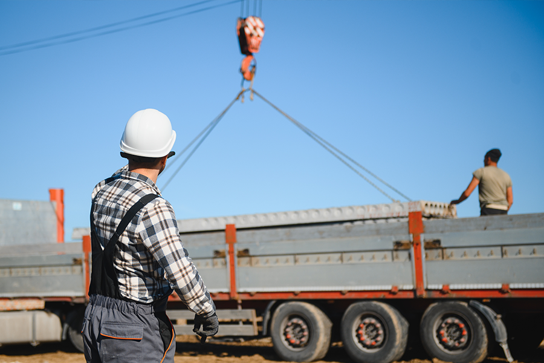

¿QUIÉNES SOMOS?
Transporte Proa S.A.C. es una empresa dedicada al transporte terrestre de carga pesada, creada en el año 2008 como un negocio familiar. La empresa tiene como finalidad brindar un servicio de transporte seguro, puntual y eficiente, atendiendo las necesidades de empresas y personas particulares que requieren trasladar carga pesada. Actualmente, la empresa se encuentra ubicada en Lurín, Lima, y desarrolla principalmente sus operaciones en la zona de Sur Chico, extendiéndose hasta Callao.
NUESTRA MISIÓN
Brindar soluciones eficientes de transporte terrestre de carga pesada, garantizando seguridad, puntualidad y confiabilidad en cada servicio, con el compromiso de satisfacer las necesidades logísticas de nuestros clientes y contribuir al desarrollo de sus operaciones.
NUESTRA VISIÓN
Ser una empresa líder en el transporte de carga pesada, reconocida por su excelencia operativa, seguridad, puntualidad y compromiso con sus clientes.